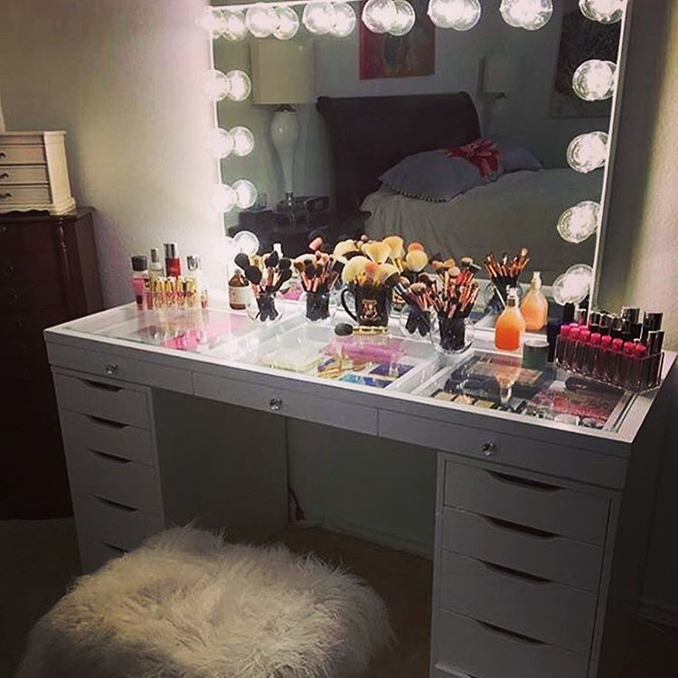
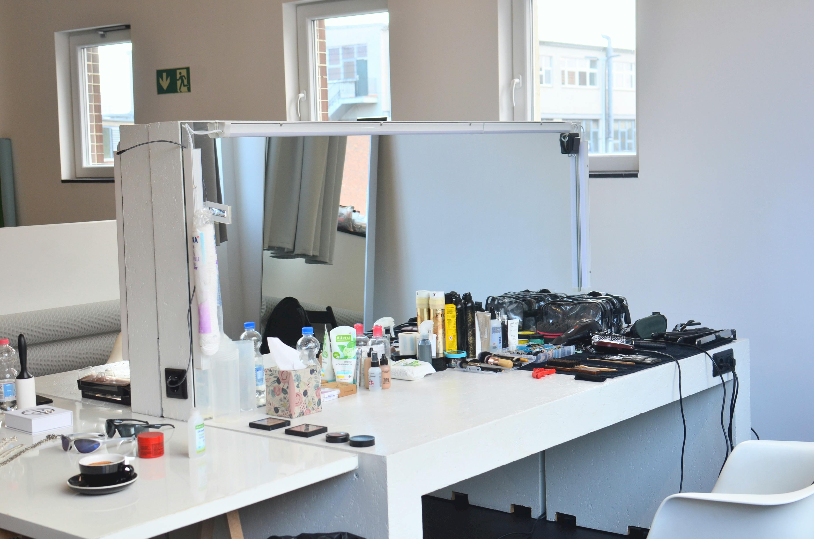

STEP BY STEP GUIDE: Everything you need to know about how to use these products.
After exploring makeup recommendations, you may be wondering how to apply them correctly. Knowing where to apply each product and understanding the right tools for blending are essential for achieving the desired look.
This guide offers detailed examples of application techniques and recommends suitable tools for blending. Whether you are considering purchasing the recommended makeup or already have it, this guide serves as a valuable resource for mastering makeup application techniques.


Here is everything you need to know for a step by step application:
How to use Primer: Start your makeup application with a clean face. Take your primer and apply a dime sized amount all over the face and let dry for 30 seconds. Apply with clean hands.
How to use your base of skin tint or foundation: After you apply your primer, take your foundation or skin tint of choice and dot it all over your face. Keep in mind that you want to make sure that this foundation and skin tint covers your whole face. The less you put on your face the less coverage and vice versa. Apply with a beauty blender which you can find here. (TIP: make sure to wet the beauty blender for better application, squeeze out extra liquid)
How to apply concealer: Take your concealer and apply it underneath your eyes. One dot on each eye will suffice. You can also apply it to the middle of your eyebrows as well as anywhere else that needs extra coverage. Wait 10 seconds and use a concealer brush which you can click here to buy the brush.
How to use contour/bronzer: Take your bronzer, contour or both and apply right above your cheek bone, at the very top of your forehead as well as underneath your chin. Make sure it is well blended. Apply with a beauty blender.
How to use blush: You can use blush by applying two small dots on the either side of your cheek preferably right in the middle. Blend it out with your beauty blender.
How to use highlight: You can apply highlight at the bridge of your nose as well as the top of your cheekbones right where the corner of your eye starts. Tap in the highlighter with clean hands until fully blended.
How to use mascara/eyelash curler: You can first start by using your eyelash curler. Insert your eyelash into the clamp of the curler and hold for 5 seconds on each eye. Make sure you don't press too hard. When applying mascara, go slow, you want to make sure the eyelashes are getting fully covered and elongated and getting the best results